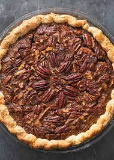

Pecan Pie

Description
This is a nice simple pecan pie recipe. Easy to make and delicious!
Ingredients
- 1 and 3/4 cups white sugar
- 1/4 cup dark corn syrup
- 1/4 cup butter
- 1 tablespoon cold water
- 2 teaspoons cornstarch
- 3 eggs
- 1/4 teaspoon salt
- 1 teaspoon vanilla extract
- 1 and 1/4 cups chopped pecans
- 1 (9 inch) unbaked pie shell
Steps
- Preheat oven to 350 degrees F (175 degrees C).
- In a medium saucepan, combine the sugar, corn syrup, butter, water, and
cornstarch. Bring to a full boil, and remove from heat.
- In a large bowl, beat eggs until frothy. Gradually beat in cooked syrup
mixture. Stir in salt, vanilla, and pecans. Pour into pie shell.
- Bake in preheated oven for 45 to 50 minutes, or until filling is set.
Home